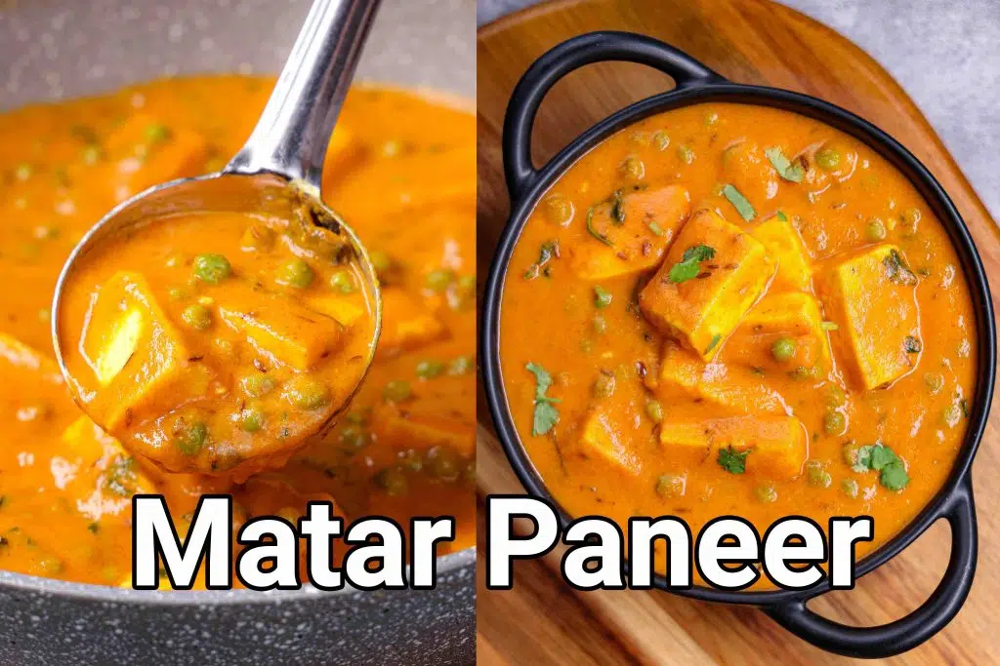

Matar Paneer
Home

Description
Matar paneer is a popular and perhaps one of the simple and delicious
North Indian paneer gravy-based curry recipes. Basically, it is
prepared with a combination of paneer and green peas as its main
ingredients in a tomato and onion gravy base. It is usually served
with a wide range of Indian flat bread dishes like naan, roti and
puri but can also be served with any type of rice variants.
Preparation Time: 10 Minutes
Cooking Time: 30 Minutes
Total Time: 40 Minutes
Ingredients
For onion-tomato gravy base:
- 2 tbsp oil
- 2 onions (chopped)
- 4 cloves garlic (crushed)
- 2 inches ginger
- 4 tomatoes (chopped)
- 2 tbsp cashew nuts
For the curry:
- 2 tbsp oil
- 1 tsp ghee
- 1 tsp cumin seeds
- ½ inch cinnamon
- 3 pods cardamom
- 2 chillies (chopped)
- ½ tsp turmeric
- 1 tsp chili powder
- ½ tsp coriander powder
- ½ tsp cumin powder
- ½ tsp garam masala
- 3 cups water
- 1 tsp salt
- 1½ cups peas
- 200 gms cottage cheese (cubed)
- 2 tbsp cream
- 1 tsp kasuri methi (crushed)
- 2 tbsp coriander leaves (chopped)
Steps
- Firstly, in a pan heat 2 tbsp oil. add 2 onion, 4 clove garlic and 2 inch ginger.
- Fry the onions until golden brown.
- Add 4 tomatoes, 2 tbsp cashews and sauté till tomatoes turn soft and pulpy.
- Cool completely, and transfer to a mixer jar.
- Grind to a smooth paste without adding water.
- To prepare the curry, heat 2 tbsp oil. Add 1 tsp ghee, 1 tsp cumin seeds, ½ inch cinnamon stick, 3 pods
cardamom and 2 chillies. Saute till the spices turn aromatic.
- Keeping the flame on low, add ½ tsp turmeric, 1 tsp chili powder, ½ tsp coriander powder, ½ tsp cumin
powder, and ½ tsp garam masala.
- Saute until the spices turn aromatic.
- Now add the prepared gravy and cook it well.
- Keep cooking till the oil separates from the gravy base.
- Further, add 3 cups water and 1 tsp salt.
- Mix well adjusting the consistency of the gravy.
- Further, add 1½ cups peas and 200 grams paneer. Mix well.
- Cover and cook for 5 minutes or until the peas are cooked thoroughly.
- Add 2 tbsp cream, 1 tsp kasuri methi and 2 tbsp coriander leaves.
- Finally, enjoy matar paneer with roti or rice.